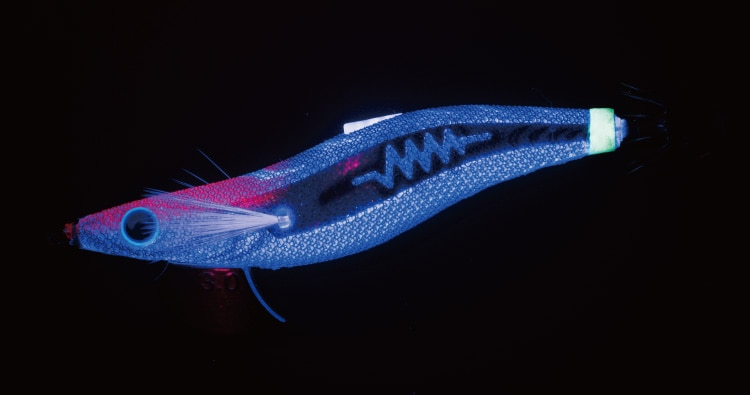
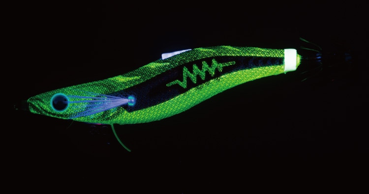
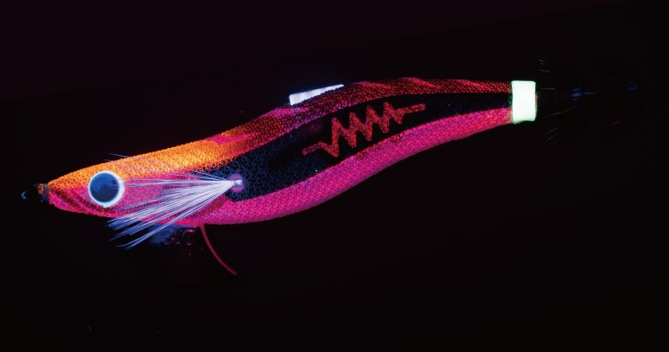
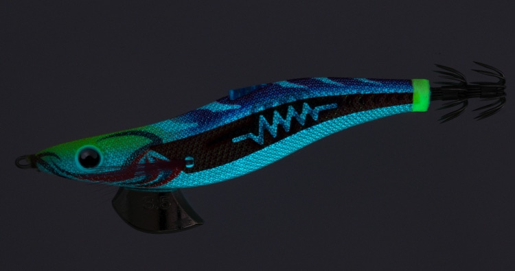

エギ王SEARCH
（EGI-OH SEARCH）
エギ王SEARCHはYAMASHITA（ヤマシタ）のエギです。
フラッシングによる「光」と、サーチラトルの「音」で、捕食モードの高活性なイカを狙うことに特化したハイアピール仕様のエギ。背中のストロボフィンが平打ちアクションを生み、ボディ側面の広いフラット面がギラっと光を反射させてイカを誘います。

画像出典:ヤマシタ公式HP
スペック
- メーカー
- YAMASHITA（ヤマシタ）
- タイプ
- エギ（サーチ・アピールタイプ）
- サイズ
- 2.5号／3号／3.5号
- 全長
- 79mm／95mm／107.5mm
- 重さ
- 12g／17g／24g
- 沈下速度
- 約3.6秒/m／約3.2秒/m／約2.8秒/m
- ターゲット
- アオリイカ
▼今すぐチェック

エギ王SEARCHの特徴
フラッシングの光とラトルの音で、広い範囲からイカを呼ぶ
-
ストロボフィンとフラットサイド
背中のストロボフィンが強い平打ちアクションを生み、ボディ側面の広いフラット面が光を強く反射。イカの視覚に強烈にアピールします。
-
イカが聞き取りやすいサーチラトル
アオリイカが最も聞き取りやすいとされる600Hz前後のラトル音を出し、広い範囲を効率よく探れます。
-
ちょい速フォール
ベーシックタイプよりフォール速度を少し速くして、高活性なイカをテンポよく探れます。ネオンブライトや490グローのボディで、明暗差でもアピールします。
エギ王SEARCHの使い方
基本はシャクリとフォールの繰り返し。シャクると平打ちでギラっと光り、ラトル音が鳴るので、広い範囲からイカを寄せられます。
フォールが少し速いので、テンポよくシャクってポイントを手早く探るのがおすすめ。イカの反応があったら、エギ王KやLIVEに持ち替えてじっくり誘うのも効果的です。
エギ王SEARCHの得意な状況
初めてのポイントや、イカがどこにいるか分からないときのサーチ用。朝夕のマヅメや夜間、濁り潮など、光と音のアピールが効く状況に向いています。
ワンポイント
ナイトゲームでは490グローや夜間向けのカラー（ヨナヨナグロー、カブキパンジー、ローストムーン、ナイトファングなど）を選ぶと、暗い中でもしっかりアピールできます。
サイズの使い分け
| サイズ | 全長／重さ | 沈下速度 |
|---|---|---|
| 2.5号 | 79mm／12g | 約3.6秒/m。秋の新子シーズンに |
| 3号 | 95mm／17g | 約3.2秒/m。秋〜冬の基準サイズ |
| 3.5号 | 107.5mm／24g | 約2.8秒/m。春の大型狙いや深めのポイントに |
どのサイズもベーシックタイプより少し速く沈む「ちょい速フォール」です。
オススメカラー
公式ラインナップから4色を紹介します（カラー名は公式の表記のまま）。

074 ハロハロアイシーシルバーのフラッシングと青い背中でベイトフィッシュを演出。日中や澄み潮に。

077 オリーブアッシュナチュラルなオリーブの背中に緑のネオンブライト。濁り潮で金のフラッシングが効く。

079 ショコラブラウン赤のネオンブライトと赤いフラッシング。夕マヅメからナイトゲームに。

084 カブキパンジー490グローボディにパープルの背中。ナイトゲームのハイアピールカラー。
画像出典:ヤマシタ公式HP
エギ王SEARCHに似ているルアー
-
 エギ王LIVE
ヤマシタ
詳細はこちら＞
エギ王LIVE
ヤマシタ
詳細はこちら＞
誰でもキレのあるダートが出せるモデル。ダートで誘いたいときに。
-
 エギ王K
ヤマシタ
詳細はこちら＞
エギ王K
ヤマシタ
詳細はこちら＞
ダートを抑えた低活性イカ攻略モデル。アピールを抑えてじっくり抱かせたいときに。
-
 エギ政 改
DUO
詳細はこちら＞
エギ政 改
DUO
詳細はこちら＞
3号・16gのエギ。他メーカーのエギでローテーションしたいときに。